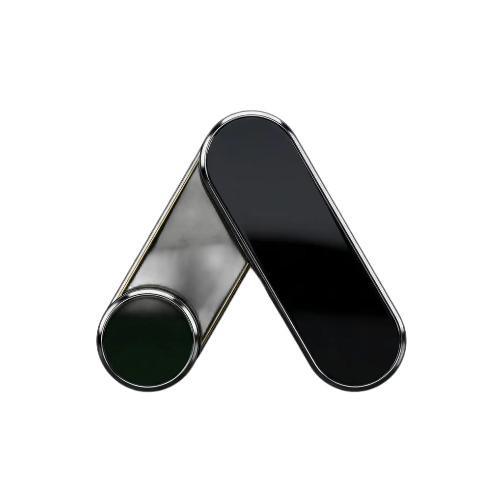
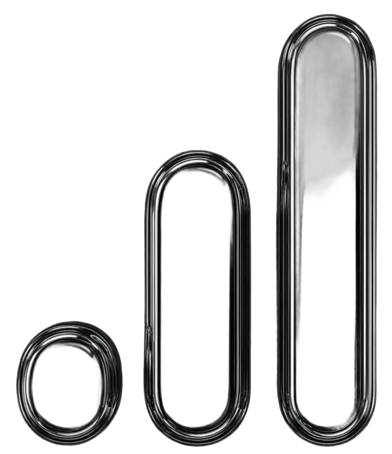

Site profissional para seus serviços
Transformamos negócios locais em Presença Digital estratégica
Criamos landing pages profissionais que geram contatos reais pelo WhatsApp e posicionam sua empresa no Google.
Criamos landing pages profissionais que geram contatos reais pelo WhatsApp e posicionam sua empresa no Google.



Muitos negócios enfrentam o mesmo problema
Se o Instagram parar ou o alcance cair, seu negócio perde visibilidade.
Quando alguém procura seu serviço online, seu negócio pode não aparecer.
Ter seguidores não significa receber pedidos de orçamento.
Empresas com presença digital estruturada acabam atraindo mais clientes.
Muitos negócios ainda dependem apenas de redes sociais ou indicações para conseguir novos clientes. Isso faz com que oportunidades importantes sejam perdidas todos os dias.
Site profissional para seus serviços
Integração direta com WhatsApp
Estrutura feita para gerar contatos
Otimização para dispositivos móveis
A ATO é uma agência especializada na criação de landing pages estratégicas para profissionais e negócios locais que desejam fortalecer sua presença digital e gerar mais contatos pela internet.
Em um cenário onde muitas empresas ainda dependem apenas de redes sociais, criamos páginas pensadas para gerar contatos reais e fortalecer a presença no Google.
Nosso trabalho é guiado por três pilares: Arte, Técnica e Ofício.
Arte para criar experiências que conectam.
Técnica para construir com eficiência e estratégia.
Ofício para entregar com compromisso e profissionalismo.
Trabalhamos com um processo claro e organizado para garantir que seu projeto seja desenvolvido com qualidade e sem complicações.
Conversamos para entender seu negócio, seus serviços e o objetivo da sua presença digital
1Definimos a estrutura da landing page para apresentar seu negócio de forma clara e gerar mais contatos
2Desenvolvemos sua página com design profissional, integração com WhatsApp e otimização para uma boa experiência em todos os dispositivos
3Publicamos sua página na internet e deixamos tudo pronto para que seus clientes possam encontrar você online
4Advogados, consultores, psicólogos e outros que desejam apresentar seus serviços com mais profissionalismo na internet
Empresas que atendem na sua cidade e precisam aparecer melhor no Google e receber mais contatos pelo WhatsApp
Negócios que ainda dependem apenas de redes sociais e querem dar o próximo passo com um site profissional
Negócios que já estão online, mas querem uma página mais estratégica para converter visitantes em clientes
Para garantir qualidade e agilidade em cada projeto, atualmente nosso foco está na criação de landing pages estratégicas para profissionais e negócios locais.
Estamos expandindo nossas soluções e, em breve, novas possibilidades estarão disponíveis.
Todos os sites da ATO já incluem segurança, responsividade, integração com WhatsApp e estrutura pronta para funcionar.
Para quem quer escalar e automatizar
Disponível em Breve
Para quem quer começar no digital sem complicação
Implementação
R$ 132,10
(único)Assinatura
R$ 74,15
/mêsPara quem quer gerar mais clientes com dados
Disponível em Breve
Os primeiros 5 clientes tem oferta especial
Cuidamos de toda a parte técnica e te entregamos um site com estrutura estratégica, segurança e profissionalismo